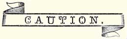
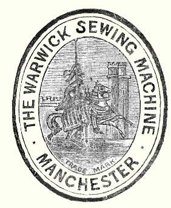

___________________________
In transmitting orders for Needles, to prevent mistakes and delay, always specify the size required, and say for
The "FAMILY" or "MEDIUM", as the case may be.
|
Size of Needle
|
Class of Work to Sew
|
Sizes of Cotton, Linen or Silk
|
|
0
|
Very fine Muslins, Cambrics, Linen, &c., Tucking
and Stitching
|
150 to 800 Cotton
|
|
1
|
Very fine Calicoes, Linen, Linen Shirtings, fine Silk
Goods, &c., Tucking, Hemming, Shirtings, Sheetings, Bleached Calicoes,
Muslins, Silks, and General Domestic Goods, and all Classes of General
Work
|
60 to 80 Cotton 24 to 30 Silk Twist |
|
2
|
All kinds of heavy Calicoes, light Woollen Goods, heavy
Silks, Seaming, Stitching, &c., Tickings, Trousers, Boys' Clothing,
Corsets, Cloaks, Mantles, &c.
|
40 to 60 Cotton 16 to 24 Silk Twist |
|
3
|
Heavy Woollens, Tickings, Bags, heavy Coats, Trousers,
&c., heavy Clothing generally.
|
10 to 24 Cotton 60 to 80 Linen |
|
4
|
Bags, Coarse Clothes, Heavy Goods of any texture
|
40 to 60 Linen, very coarse Cotton or Silk
|
Always use the best soft-finished cotton, because it makes better work, and is the cheapest in the end.
Purchase the needles at our establishment or agencies, to ensure their being of the best quality.
We keep in stock superior drilled-eyes needles, machine oil, &c., manufactured expressly for our sewing machines. Needles and small articles can be sent by post to all parts of the country, on receipt of post-office order in payment; stamps only for small sums under five shillings.

The high reputation of the "Warwick" Sewing Machine has led to numerous attempts to make and sell spurious imitations, which are usually offered as the "Warwick", or under the pretext of being made on the same system.
|
No Machine sold as the "Warwick" is genuine
without this Trade Mark stamped on a Brass Plate and fixed to the arm.
|

|
The Public are warned against the purchase of counterfeit Machines sold as the "Warwick" in violation of legal rights. |
REGISTERED
The above Cut represents the "Warwick" Trade Mark Plate, which is affixed to the arm of every Machine as an additional protection to the public against the deceptions of parties advertising for sale worthless counterfeit Machines as the "Warwick".